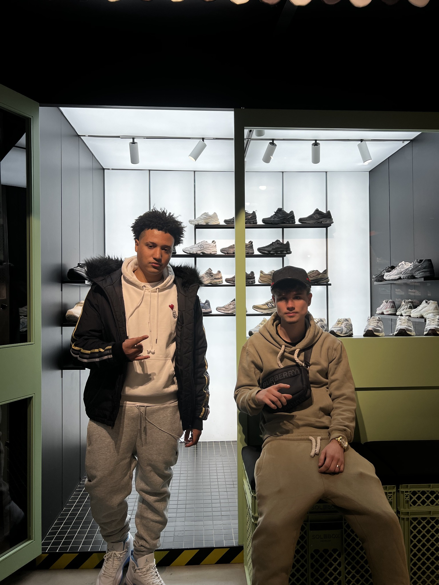

TWO FOUNDERS. ONE VISION.
NUESTRA HISTORIA
Somos dos chicos de Barcelona con un mismo objetivo, seguir vistiendo con nuestra esencia de siempre pero diferenciándonos del resto.
Empezamos este proyecto porque estábamos cansados de lo de siempre. Nos gusta vestir cómodos, en chándal todo el día, pero echábamos de menos ropa que realmente tuviera personalidad, estilo urbano y que no parezca que sales a comprar el pan de cualquier manera. Las tiendas de fast-fashion tradicionales no nos representaban.
Así decidimos crear LeTwelve: una marca de moda urbana pensada para jóvenes que quieren destacar. Ofrecemos fits completos de chándal ya combinados, con diseños que llamaran la atención.